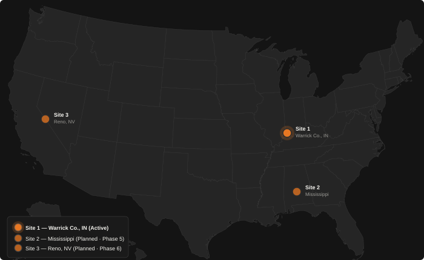

Market strategy
Dominion is building a multi-site AI compute network along interstate natural gas transmission corridors — where power is cheap, land is available, and no hyperscaler has preceded us. The business does not become three data centers. It becomes one platform operating across three sites.
The three sites
Each site adds distinct geographic coverage and sits on a different segment of the US interstate gas transmission network. Together they cover the Midwest, the Gulf Coast, and the Southwest — three separate enterprise markets, one standardized platform.

Site selection
Every Dominion site is evaluated against the same framework — the same criteria that governed the selection of Warrick County, Indiana for Site 1. Standardization is the discipline that makes the multi-site platform replicable.
Why secondary markets
Secondary market advantages do not erode quickly. They are features of geography, energy infrastructure, and competitive dynamics that compound over time.